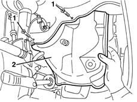

7055B66 Engine compartment DUST SHIELD protection in right front wheel arch - R.R.
- Path
- Procedures > 70 FITTINGS > 7055 MOULDING AND PROTECTION > 7055B exterior protections > 7055B66 Engine compartment DUST SHIELD protection in right front wheel arch - R.R.
- Kind
- repair procedure (removal / refitting; the operation number is the code)
- Applies to
- all engines; all production periods
- Interactive page
- https://sloeber94.github.io/elrnDB-lYpsln/en/#/2429681
Applies to: all engines; all production periods
 Removing
Removing
 Refitting
RefittingPosition the vehicle on a lift and raise it.
7055B91 Right front WHEEL ARCH LINER - R.R.
1. Undo the bolts fixing the dust protection.
2. Remove the dust protection.

Applies to: all engines; all production periods
Refitting
RemovingCheck that the protection is not damaged.
Place the protection in position and secure it using the bolts.
Topics linked from this page (2)
Topics that link to this page (57)
- 0510A20 timing gear with belt drive - check - carry out operation with cam cover(s) removed and tappets adjusted
- 0510A30 cam lift - check with cam cover(s) removed
- 1004B10 power unit with manual gearbox - r + r
- 1016B10 single cylinder head extension - change gasket
- 1016C10 cylinder head - r + r and replace gasket
- 1020A20 crank case oil sump - r + r clean seals for sealant application
- 1020B10 cover of timing system with chain drive - r + r replace oil seal and gasket
- 1020B30 timing system cover oil seal - replace
- 1020D14 front crank shaft oil seal cover - r + r and replace seals for versions with oil pump on crank shaft, timing side
- 1020D18 front crank shaft cover oil seal - replace
- 1020D26 flywheel side oil seal cover - r+r
- 1020D38 flywheel side oil seal - replace
- 1024B10 engine flywheel - r + r for versions with manual gearbox
- 1028H10 connecting rod and piston set - r r
- 1028H20 piston with connecting rod - r r
- 1032A12 CHAIN AND GEARS for timing system - R.R. for timing or Replacement.
- 1032B10 toothed timing belt - r + r for timing adjustment or replacement
- 1032B46 toothed drive pulley - r + r
- 1032B52 toothed driven pulley (one) - r + r
- 1032B60 bolt pulley - r r
- 1032C18 mobile timing system tensioner - r + r for 24 valve engines
- 1032C40 Timing CHAIN TENSIONER PLATE - R.R.
- 1032D12 timing system protective cover(s) - r + r
- 1036B10 overhead camshaft - r r on vehicle
- 1036H57 hydraulic tappets all r r
- 1036L10 camshafts in cylinder head extension - r r - includes cylinder head extension replacement if necessary
- 1036L30 front oil seal of intake camshaft in cylinder head extension replace
- 1056B90 system cable bundle - r + r
- 1080D35 Engine oil collection MANIFOLD - R.R.
- 1084B12 engine oil pump - r+r
- 1084B26 emgine oil intake duct - r r
- 1084B45 RIGID air supply PIPE between air-air heat exchanger and intermediate hose - R.R.
- 1088C10 water pump - r + r
- 1092A10 Crankshaft services PULLEY - R.R.
- 1092A14 Pulley support FLANGE on crankshaft - R.R.
- 1092B40 air conditioner compressor/alternator drive belt - r + r
- 1092B42 Air conditioning compressor and alternator drive belt TENSIONER - R.R.
- 1092G10 single engine belt r r
- 1092G14 engine component single belt mobile tensioner - r + r
- 1810A20 clutch - r + r
- 1820A24 thrust bearing linkage - r + r
- 2110A10 manual gearbox and differential - r + r
- 2110A60 manual gearbox/engine coupling bracket - r+r
- 2110D63 rh differential shaft oil seal - r r
- 2710A10 drive shaft with joints (one), l/h or r/h - r + r
- 2710A22 differential and constant velocity joint (one) l/h or r/h - r + r - includes boot replacement
- 2710A31 intermediate drive shaft - r r
- 2710A35 intermediate drive shaft mount - r r
- 3340A28 right front wheel rpm sensor - r r
- 3340A32 front wheel rpm sensors (two) - r r
- 3340A48 wheel rpm sensors (four) - r r
- 5040A20 air conditioner compressor - r+r - includes fluid level check and top up if necessary
- 5040A26 compressor mount - r r
- 5040A50 pipe from compressor to air conditioner condenser - r+r
- 5040A60 pipe from condenser to evaporator (expansion pipe) - r+r
- 5530A10 alternator - r+r
- 5530A40 alternator brackets/mount/spacer - r r